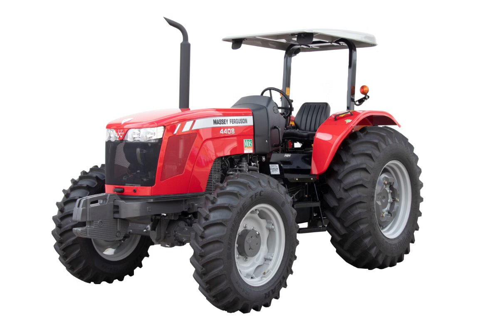
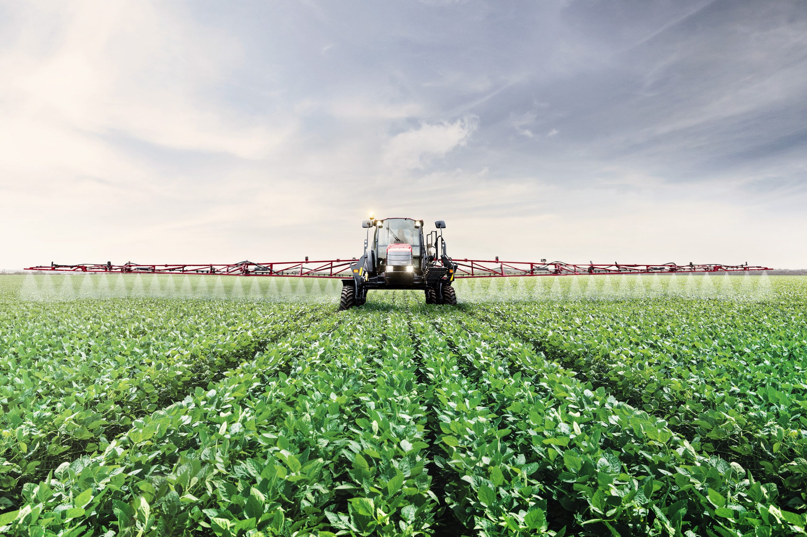

Trator
O trator é um dos veículos mais versáteis no campo, utilizado principalmente para preparar o solo, plantar, e transportar materiais. Ele pode ser equipado com diversos implementos agrícolas, como arados, grades e semeadoras.
Colheitadeira
A colheitadeira é essencial na colheita de grãos e sementes. Este veículo realiza a colheita, trilha e limpa os grãos de forma eficiente, reduzindo o tempo e o esforço necessários para estas tarefas.

Pulverizador
O pulverizador é utilizado para a aplicação de defensivos agrícolas, fertilizantes e outros produtos líquidos nas plantações. Ele garante uma distribuição uniforme e controlada dos produtos, aumentando a eficácia do tratamento.